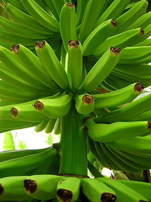

Intellectual property has the shelf life of a banana.
Scott Thompson
Bananas
A banana is an edible fruit produced by several kinds of large herbaceous flowering plants of the genus Musa.[1] (In some countries, bananas used for cooking may be called plantains.) The fruit is variable in size, color and firmness, but is usually elongated and curved, with soft flesh rich in starch covered with a rind which may be yellow, purple or red when ripe. The fruits grow in clusters hanging from the top of the plant. Almost all modern edible parthenocarpic (seedless) bananas come from two wild species – Musa acuminata and Musa balbisiana. The scientific names of most cultivated bananas are Musa acuminata, Musa balbisiana, and Musa ×paradisiaca for the hybrid Musa acuminata × M. balbisiana, depending on their genomic constitution. The old scientific name Musa sapientum is no longer used.
Musa species are native to tropical South and Southeast Asia, and are likely to have been first domesticated in Papua New Guinea.[2][3] They are grown in at least 107 countries,[4] primarily for their fruit, and to a lesser extent to make fiber, banana wine and as ornamental plants. In 2013 bananas were fourth among the main world food crops (after rice, wheat and maize) in financial value.[5]
Worldwide, there is no sharp distinction between "bananas" and "plantains". Especially in the Americas and Europe, "banana" usually refers to soft, sweet, dessert bananas, particularly those of the Cavendish group, which are the main exports from banana-growing countries. By contrast, Musa cultivars with firmer, starchier fruit are called "plantains". In other regions, such as Southeast Asia, many more kinds of banana are grown and eaten, so the simple two-fold distinction is not useful and is not made in local languages.
The term "banana" is also used as the common name for the plants which produce the fruit.[1] This can extend to other members of the genus Musa like the scarlet banana (Musa coccinea), pink banana (Musa velutina) and the Fe'i bananas. It can also refer to members of the genus Ensete, like the snow banana (Ensete glaucum) and the economically important false banana (Ensete ventricosum). Both genera are classified under the banana family, Musaceae.